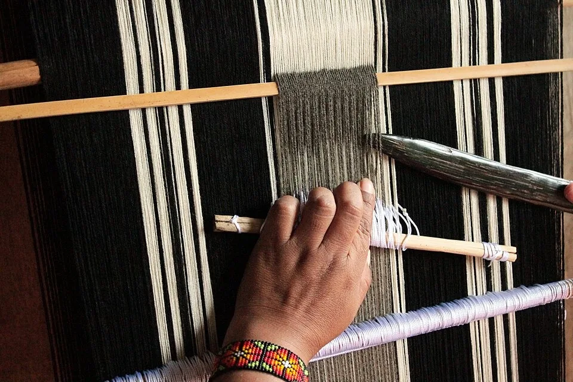
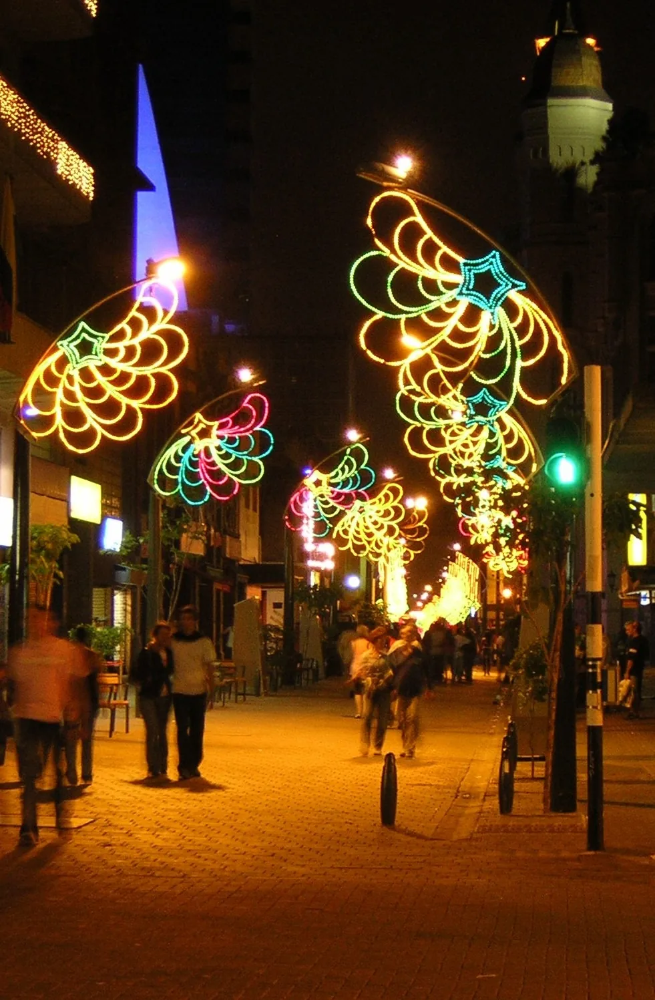

Unas manos separan los hilos de un telar en una fotografía tomada en Putumayo en 2017. El encuadre muestra el trabajo, pero deja fuera quién decidirá el uso y la circulación del tejido. El vestuario se construye también en esa distancia: entre lo que se fabrica, la imagen que se le atribuye y la experiencia de quien lo lleva. Seguir esas relaciones permite acercar el diseño de una prenda al espacio donde aparece.


Richard Sennett propone pensar la distancia entre lo que se construye y lo que la gente hace con ello. Su ciudad abierta admite usos que el proyecto no ha previsto, encuentros entre personas distintas y modificaciones a lo largo del tiempo. El argumento resulta útil frente al edificio que intenta resolverlo todo y frente al barrio que separa cada actividad hasta hacer improbable cualquier encuentro. Pero una planta flexible no garantiza una vida libre. Las puertas pueden estar abiertas y la presencia de algunas personas seguir siendo cuestionada. [1]
La ropa hace perceptible esa distancia. Su relación con la ciudad incluye el clima, la movilidad y el trabajo: caminar bajo el sol, sentarse en una moto, cargar una bolsa, atender un mostrador. También incluye la mirada ajena. Una prenda cómoda puede recibir una lectura hostil; una indumentaria costosa puede facilitar el acceso a un lugar sin mejorar en nada la capacidad de habitarlo. El diseño del espacio y las convenciones de apariencia se encuentran en el cuerpo que necesita pasar.
Mahsa Alami Fariman examina los límites de la apertura urbana desde Teherán, en una crítica feminista a Sennett. Su investigación desplaza la atención hacia el control político y social del espacio y hacia las acciones de las mujeres que lo disputan. La apertura deja de ser una cualidad atribuible exclusivamente a la forma construida. También depende de quién consigue actuar dentro de ella. El caso tiene una historia específica: trasladarlo a Medellín como si las restricciones fueran idénticas borraría precisamente las diferencias que permite estudiar. [2]
La pregunta puede trasladarse a un proyecto en Colombia sin trasladar el diagnóstico de Teherán: ¿a quién se imagina utilizando una plaza o una calle? El peatón abstracto oculta jornadas y necesidades distintas. Alguien llega al trabajo, otra persona espera con un niño, alguien necesita vender o descansar. Escuchar esas situaciones permite discutir qué ofrece la superficie común a cada una.
Vestirse forma parte de esas negociaciones, aunque una fotografía no permita reconstruirlas. La apariencia no demuestra el grado de autonomía de una mujer ni permite deducir sus ideas. Tampoco existe una silueta que vuelva emancipador un conjunto por sí mismo. La libertad estética exige poder escoger sin que esa elección sirva de excusa para negar trabajo, respeto o permanencia. Convertir la independencia en otra imagen obligatoria trasladaría la vigilancia a un guardarropa nuevo.
Esta distinción importa cuando la moda se presenta como una vía de pertenencia. Aquí llamaremos moda de arraigo a una práctica que conserva relaciones comprobables con un territorio: materiales, oficios, condiciones de uso y personas que participan en la fabricación. Es una definición de trabajo para este ensayo. No basta con incorporar una flor reconocible o llamar ancestral a una textura. El vínculo tendría que poder explicarse siguiendo la prenda hacia el taller y hacia los lugares donde será utilizada.
Laura Beltrán-Rubio estudia cómo Johanna Ortiz y Pepa Pombo reelaboran referencias de identidad colombiana para el mercado global. Su análisis permite observar la construcción de una imagen exportable mediante motivos y técnicas reconocibles. Esa representación puede ampliar el repertorio con el que se mira al país. Sin embargo, estudiar una imagen de identidad no equivale a verificar quién cobra, quién decide o cómo se distribuye el valor de una colección. El artículo citado no se utiliza aquí como prueba de abusos laborales de esas firmas. [3]
La separación entre imagen y condiciones de producción abre un trabajo concreto para el diseño. Un crédito debería distinguir a quien concibe una colección de quien desarrolla una técnica o ejecuta una pieza. Un acuerdo de colaboración debería aclarar qué se encarga, cuánto se paga y qué usos posteriores se autorizan. Si el relato comercial atribuye valor al origen de un tejido, ese origen merece algo más preciso que una mención genérica a la comunidad. No todas las personas que comparten un territorio tienen el mismo oficio ni la misma autoridad para hablar por él.
El resumen de una investigación de Sandra Marcela Vélez-Granda, Ana María Sossa-Londoño y Julián Monsalve Correa, publicada en 2026, describe aprendizaje situado de diseño de vestuario en Córdoba, Antioquia y Magdalena. Relaciona formación, territorio y saberes artesanales. Su interés para esta discusión está en cambiar el lugar del aprendizaje: salir del repertorio visual y entrar en una relación con conocimientos y materiales concretos. El alcance del resumen consultado no permite evaluar los resultados económicos de esas experiencias ni afirmar que resolvieron las asimetrías entre participantes. [4]
Una colaboración puede empezar por una restricción y obtener de ella una decisión formal. Si una fibra responde mal a una curva cerrada, hay que modificar la pieza; si un bordado tarda más de lo previsto, hay que revisar el precio o el calendario. En ese momento el oficio participa en el proyecto porque tiene capacidad de cambiarlo. Una propuesta que solo acepta el conocimiento local cuando confirma el dibujo inicial conserva la dirección en un único lado de la mesa.


La cuestión del uso exige una atención semejante. Una prenda concebida para representar un lugar en una fotografía puede funcionar de otra manera durante una jornada de trabajo. Bolsillos, costuras, ventilación, peso y facilidad de lavado pertenecen al diseño tanto como la silueta. El arraigo puede aparecer en esas decisiones discretas: conocer el calor que se soporta, los recorridos que se hacen y la reparación que puede conseguirse cerca. La pertenencia no necesita hacerse visible en cada centímetro de tela.
Hay además una dificultad política. Pedir que una persona represente su territorio puede convertir la identidad en una tarea adicional. Nadie debería tener que vestirse de manera reconociblemente regional para ser considerado parte de un lugar. Las referencias familiares conviven con compras de segunda mano, uniformes, prendas industriales y deseos de cambio. Esa combinación no vuelve menos legítima la relación con la ciudad. Una identidad cultural capaz de transformarse necesita admitir también el derecho a no exhibirla.
La posibilidad de cambiarse de ropa para evitar una reacción no resuelve el trato recibido. El proyecto urbano puede examinar otras condiciones de autonomía: recorridos legibles, lugares de espera y acceso a servicios. Evaluarlas con quienes utilizan el espacio permitiría identificar dónde un ajuste material facilita la permanencia y dónde la dificultad requiere otra clase de decisión.
La mezcla de usos que interesa a Sennett necesita considerar también quién puede aparecer sin tener que justificarse. Esa pregunta puede entrar en las consultas de un proyecto y en su evaluación posterior. Un espacio admite cambios de actividad, pero sus reglas y convenciones pueden seguir restringiendo a quienes lo utilizan. Examinar ambas cosas amplía la discusión sobre la apertura.
Para la moda, la consecuencia es igualmente concreta. El vínculo territorial necesita sostenerse cuando termina la sesión de fotos: en un crédito que permite encontrar a la persona que trabajó, en una reparación posible, en un acuerdo que puede revisarse. Para la ciudad, la prueba comienza después de inaugurar la plaza: quién vuelve, quién permanece y quién encuentra todavía motivos para cambiar de ruta. Las dos prácticas pueden compartir una atención a lo que sucede cuando el diseño sale de la imagen y entra en uso.
La ropa puede conservar conocimiento o expresar pertenencia; también puede recibir una lectura que su usuaria no eligió. Una ciudad abierta se prueba en esa distancia: poder salir con la ropa escogida, usar sus servicios y quedarse sin tener que representar una identidad para merecerlo.
Fuentes.
- Richard Sennett — Building and Dwelling, ficha de Yale; edición de 2023 de la obra de 2018
- Mahsa Alami Fariman — Closedness and openness in Tehran; a feminist critique of Sennett, 2023, pp. 1690–1711
- Laura Beltrán-Rubio — Colombia For Export, Cuadernos 64; DOI 10.18682/cdc.vi64.1216
- Vélez-Granda, Sossa-Londoño y Monsalve Correa — Diseño de vestuario y aprendizaje situado en el Caribe colombiano, 2026, pp. 261–279; resumen consultado
Ensayo teórico y documental. Sin etnografía propia. La referencia a Teherán no constituye un diagnóstico de Medellín; los estudios de moda no se usan para atribuir abusos a marcas.
Consulta: 13.11.2026. Interpretación y edición: RUMMOR. Edición de prueba para revisión.